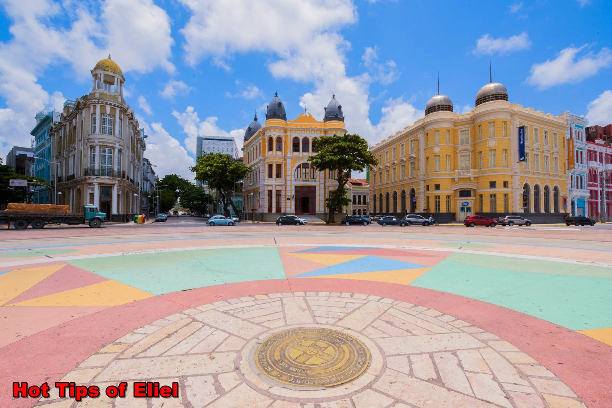

Marco Zero
Venha conhecer Recife
Oficialmente chamada de Praça Rio Branco, é partir dela que todas as distâncias rodoviárias locais são medidas, por isso é chamada de Marco Zero. Apesar de ser uma praça desde o início do século XIV, foi em 1999 que ganhou o seu traçado atual, a partir de um projeto do pintor Cícero Dias. Inclusive, é desde autor a grande rosa dos ventos de 10 metros de diâmetro localizada no centro.
O MARCO ZERO em Recife é um dos destinos históricos mais importantes do nordeste do país. A região reúne atrações históricas e culturais, centro de artesanato e ótimos restaurantes. Além disso, é o principal local do carnaval de Pernambuco, reunindo música, alegria e muita festa. A seguir, saiba mais detalhes sobre o destino.
Recife é uma das capitais nordestinas que mais atrai turistas, não só do Brasil como no mundo. Além de belas praias, a Veneza Brasileira encanta os olhares dos visitantes com seus polos culturais.